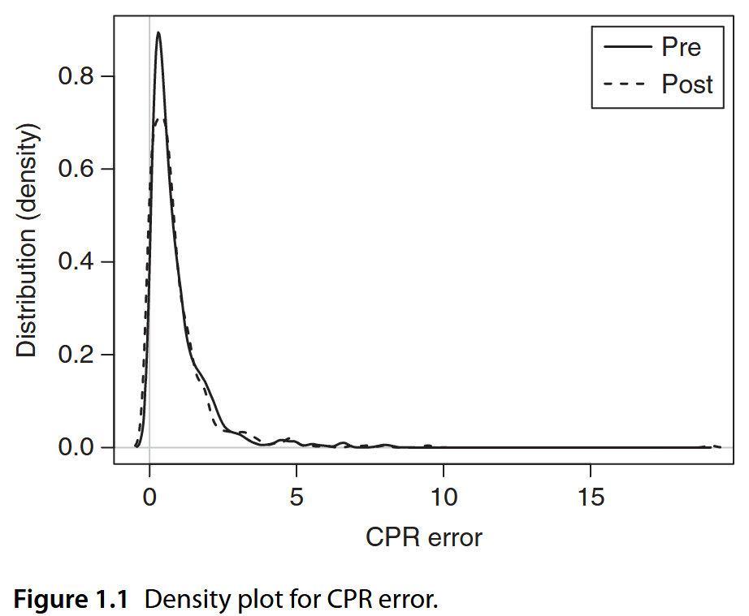
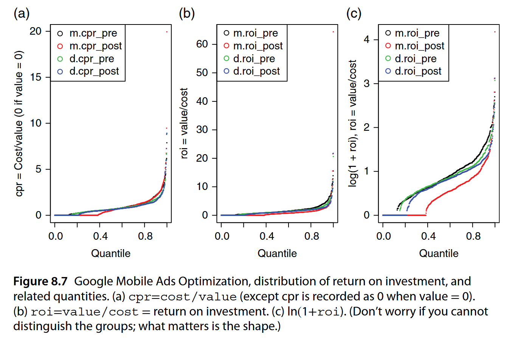
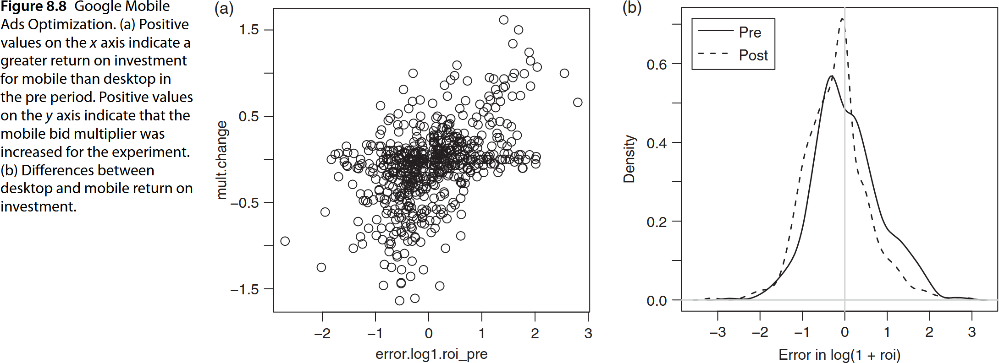
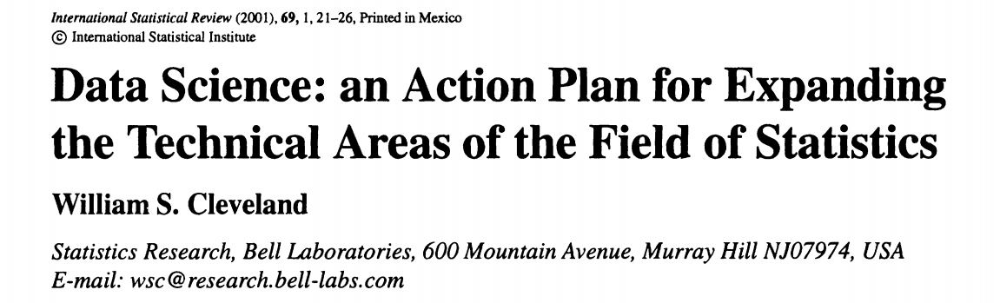
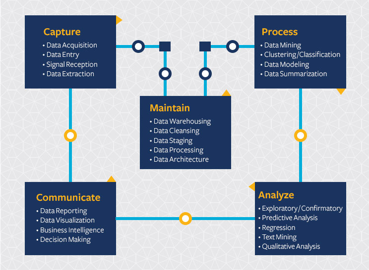

What is Data Science?
PSTAT 234 (Fall 2025)
University of California, Santa Barbara
Data Science Example: Google Ads
Backbone of Google’s revenue model
80.20% market share in pay-per-click (PPC) ads market ($237.8 billion revenue in 2023)
Precision targeting: search intent, demographics, location, time
Scalable for all businesses: $50 to $5M budgets
Global reach with local control
82% of small businesses attribute revenue growth to digital ads and 79% say these tools help them compete with larger companies.
Faced accusations of anti-competitive practices, market dominance, and potential favoring its own services in search results.
Google Ads
Types of Google Ads (source: Zapier).
| Ad type | Location |
|---|---|
| Search ads | Throughout ranking links in the Google Search Engine Results Page |
| Display ads | On webpages, apps, and Google properties in the Display network |
| Shopping ads | Shopping, SERP, Images, Maps, and search partner search results |
| Video ads | Before, during, and after YouTube videos; YouTube search feeds; YouTube home feed; and across Google video partners network |
| App ads | Play Store search suggestions/results, Google SERP, YouTube feeds, Google Discover, and across the Google search partner network |
| Discovery ads | Google Discover feed, YouTube homepage and Watch Next feeds, and Gmail Promotion and Social tabs |
| Local Services Ads | Google SERP, Google Maps |
| Performance Max ads | All Google advertising channels |
| Smart ads | Google SERP, Maps, YouTube, Gmail, and search partner sites |
How Google Ads Work
For this example, assume we are looking at search ads.
- Advertisers bid for ads to appear during searches.
- An auction determines which ads are shown based on bid and estimated user interest.
- High-placing ads are shown to users
- Advertisers pay Google if users click on the ads.
- Enhanced Campaigns allow customized bidding based on user context (e.g., time, device, location).
Internet Advertising Data
Advertising data often have the following variables:
| Variable | Description |
|---|---|
impr |
Number of ad impressions (ads shown) |
click |
Number of clicks |
cost |
What advertisers paid |
conv |
Number of conversions (purchases) |
value |
Value of conversions as reported by advertisers |
cpm |
Cost per impression (cost/impr) |
cpc |
Cost per click (cost/click) |
cpa |
Cost per conversion (cost/conv) (or 0, if conv is 0) |
cpr |
Cost per return (cost/value) (or 0 if value is 0) |
roi |
Return on investment (value/cost) |
Data variations
| Prefix indicates platform | |
|---|---|
m.* |
Mobile, e.g. m.impr |
d.* |
Desktop/tablet, e.g. d.impr |
| Suffix indicates when | |
|---|---|
*_pre |
Before experiment, e.g. m.impr_pre |
*_post |
In experiment, e.g. m.impr_post |
From the data, derive new features for analysis:
| Derived features | |
|---|---|
error.cpr* |
m.cpr - d.cpr (pre, post) |
mult.change |
Change in mobile multiplier |
Common Questions from Advertisers
- How much am I paying for ads? On desktop? On mobile?
- How much am I paying for clicks?
- How much am I paying for conversions (purchases)?
- How much was spent for each dollar of value generated (cost per return)?
- How much am I getting back in comparison to what I spent? (return on investment)
Google Ads Metrics
If the
roi = value/costwas higher on mobile than desktop,
\[\texttt{m.roi} = \frac{\texttt{m.value}}{\texttt{m.cost}} > \frac{\texttt{d.value}}{\texttt{d.cost}}= \texttt{d.roi} \]Increasing “mobile multiplier” means adjusting mobile bids by a factor: \[\texttt{mult} = \frac{\texttt{m.cost}}{\texttt{d.cost}}\]
Due to auction structure, more mobile and fewer desktop ads will show.
Better “mobile multiplier” should make two
rois more equal:
\[\texttt{m.roi} \approx \texttt{d.roi}\]Why would Google and advertisers care about this?
Google Ads Experiment: Goal
Setting appropriate multiplier equalizes return on ad investment.
Better experience for advertisers benefits Google in the long run.
Experiment to equalize return on ad investment (desktop vs. mobile).
Determine better “mobile multiplier” recommendation.
Simpler advertising cost estimates.
Suppose a new multiplier recommendation algorithm is being tested.
After experiment, how do you measure success?
Google Ads Experiment: Naive approach
Chihara and Hesterberg (2018)
Question from a Googler
I have a pre vs. post comparison I’m trying to make where alternative hypothesis is pre.mean.error > post.mean.error (mean.error is mean of cpr.error = m.cpr - d.cpr). My distribution for these samples are both right skewed as shown below. Anyone know what test method would be best suited for this type of situation?

Density plot for cpr.error. (Recall cpr is 0 if value is 0)
Google Ads Experiment: Feature Engineering
Is CPR error (m.cpr - d.cpr) a good measure of performance difference?

Figure 8.7 (c) offers interpretability of zeros whereas (a) doesn’t and is less non-linear than (b)
Google Ads Experiment: Results

Error means error = log(1+m.roi) - log(1+d.roi) for pre/post experiment.
Hypothesis test can be performed on error_pre and error_post.
What does this example tell us about data science?
Data Science is …
A multi-disciplinary field that uses scientific methods, processes, algorithms and systems to extract knowledge and insights from structured and unstructured data (reference)
Merger of statistics, data analysis, machine learning and their related methods in order to understand and analyze actual phenomena with data (reference)
Composed of techniques and theories drawn from many fields within the context of mathematics, statistics, computer science, and information science. (reference)

[International Statistical Review]
Domain expertise: data analysis collaborations in subject matter areas.
Mathematics/Statistics: models, estimation, and distribution based on probabilistic inference.
Computing: hardware and software; computational algorithms
Theory: foundations of data science; mathematical investigations of models and methods
Data Science Approach

Statistics and Data Science
Many statistical methods make (optimistic) assumptions.
Data science often focus on practical benefits (predictions).
Data science often iterate to make improvements.
Data science process emphasize entire data science lifecycle
Data science develops processes (often custom built)
Data Science Diagram